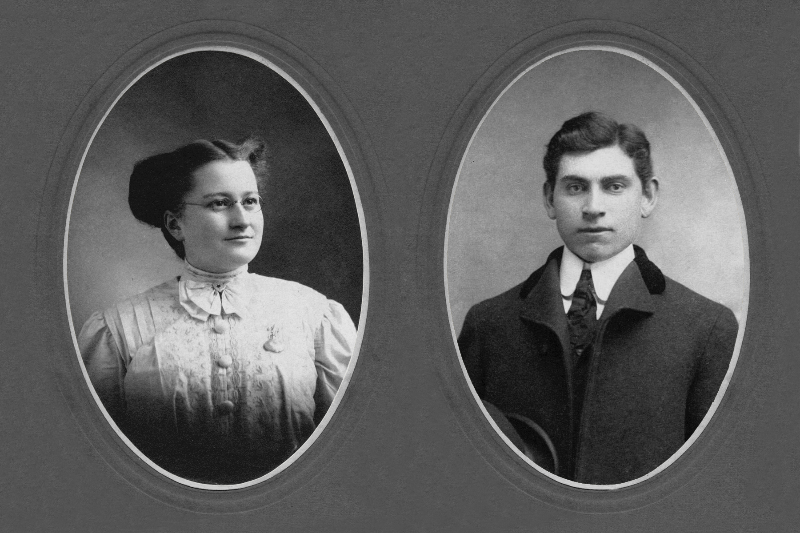
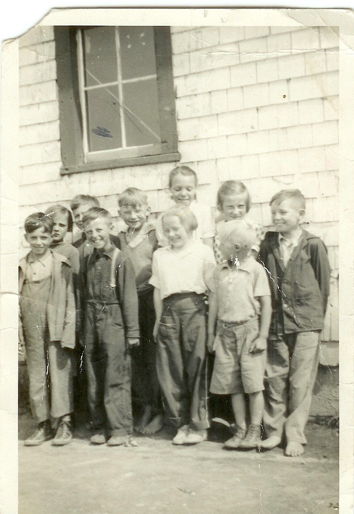

The Family Chronicle
No. 173 May 16, 2009
____________________________________________________________________

Elmer and Jane (Watling) Glendenning
(Jane Glendenning Collection)
Millers Bridge
Readers will know that I have been trying to discover the origin the name “Millers Bridge” – the bridge between Norman Glendenning’s property and the Little Branch School. My enquiry to Barry MacKenzie brought the following response:
“To my knowledge, there were no MacKnights in Black River before Kenneth, except for those MacKnight women (i.e., Jane Fowlie) who married men in that community. In any case, Alexander remembered that Miller lived with the Mitchell family rather than the MacKnights. I expect that "Old Tom Miller," if he did indeed exist, would have lived with the Mitchell's somewhere in the vicinity of the abandoned farm of Warren MacKnight on the North side of Napan, though I don't know whether Miller's Cove is on the north or south side of the river. I say this purely because somehow Alexander "Goose" MacKnight ended up with his slave collar and hoe.
As for Miller's in Black River, I did find the following family in the 1851 census:
27 |
5062 |
Miller |
John |
M |
Head |
55 |
French |
Labourer |
Birth |
|
|
|
28 |
5062 |
Miller |
Elizabeth |
F |
Wife |
28 |
French |
|
Birth |
|
|
|
29 |
5062 |
Miller |
Bridget |
F |
Daughter |
3 |
French |
|
Birth |
|
|
|
However, this family seems to appear in the same neighbourhood as the Willistons, Gallaghers, etc, so I presume they are in the Bay du Vin area. Perhaps the bridge in the Branch was named instead for the builder rather than settlers there? I am, of course, just musing about all of this.
Burma Shave
Does anyone remember the old Burma Shave signs of the 1940’s? They were small red signs with white letters. Five signs, about 100 feet apart, each containing 1 line of a 4 line couplet......and the obligatory 5th sign advertising Burma Shave, a popular shaving cream.
Here are some of the actual signs; unfortunately, I do not know the source
DON'T
LOSE YOUR HEAD
TO GAIN A MINUTE
YOU NEED YOUR HEAD
YOUR
BRAINS ARE IN IT
Burma Shave
DROVE TOO LONG
DRIVER
SNOOZING
WHAT HAPPENED NEXT
IS NOT AMUSING
Burma
Shave
PASSING
SCHOOL ZONE
TAKE IT SLOW
LET OUR LITTLE
SHAVERS GROW
Burma Shave
BROTHER
SPEEDER
LET'S REHEARSE
ALL TOGETHER
GOOD MORNING,
NURSE
Burma Shave
SPEED WAS HIGH
WEATHER WAS
NOT
TIRES WERE THIN
X MARKS THE SPOT
Burma Shave
THE
MIDNIGHT RIDE
OF PAUL FOR BEER
LED TO A
WARMER
HEMISPHERE
Burma Shave
AROUND THE
CURVE
LICKETY-SPLIT
BEAUTIFUL CAR
WASN'T IT?
Burma
Shave
NO MATTER THE PRICE
NO MATTER HOW NEW
THE
BEST SAFETY DEVICE
IN THE CAR IS YOU
Burma Shave
A
GUY WHO DRIVES
A CAR WIDE OPEN
IS NOT THINKIN'
HE'S
JUST HOPIN'
Burma Shave
AT INTERSECTIONS
LOOK
EACH WAY
A HARP SOUNDS NICE
BUT IT'S HARD TO PLAY
Burma
Shave
BOTH
HANDS ON THE WHEEL
EYES ON THE ROAD
THAT'S THE
SKILLFUL
DRIVER'S CODE
Burma Shave
THE ONE WHO
DRIVES
WHEN HE'S BEEN DRINKING
DEPENDS ON YOU
TO DO
HIS THINKING
Burma Shave
Correction – Chronicle 120

Back row: Catherine MacDougall, George Watling, Don Glendenning, Mildred MacDonald, Frances MacLean and Murray MacNaughton. Front row: Curtis Adams, Kenneth MacDonald, Mabel MacLean and Cameron MacDonald taken at the Little Branch School in 1938. (Photo courtesy of Bertie MacLean) – Thanks Kay
The Family Chronicle (Copyright) is an occasional newsletter published by Don Glendenning and posted on the family website. It is intended to share information about my family, community and the times in which I grew up. While every effort is made to be accurate, errors are likely to occur. Comments, enquiries and information may be sent to 62 Queen Elizabeth Drive, Charlottetown, PEI, C1A 3A9. Tel: 902 892 5859. Email: don@glendenning.net Web: www.glendenning.net/don